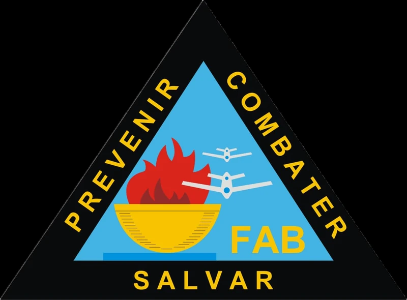
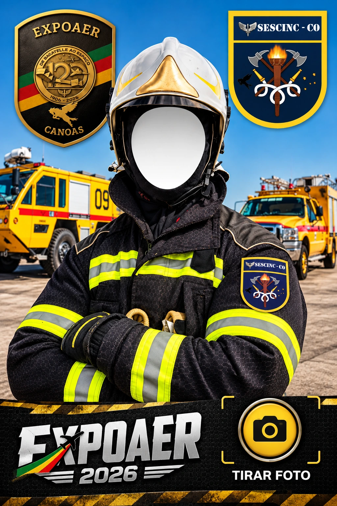
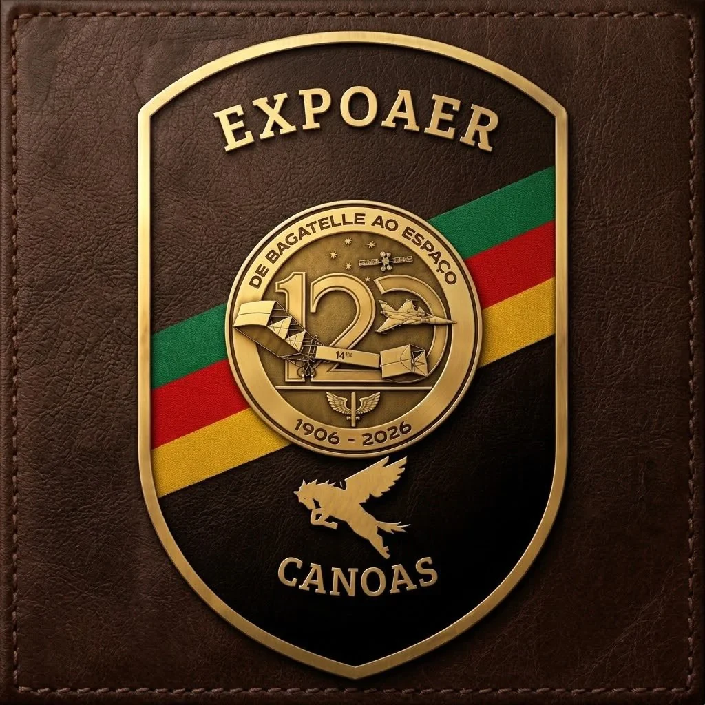

Capacidade aproximada do tanque principal.
≈ 28,5 caixas-d’água de 200 L
Serviço de Salvamento e Combate a IncêndioROSENBAUER PANTHER 4×4
Conheça de perto uma viatura de combate a incêndio aeroportuário feita para responder rápido, transportar grandes volumes de agentes extintores e atuar onde cada segundo importa.
665 HPpotência
5.700 Lágua
6.000 L/minbomba
0–80 em 25 saceleração
O que você quer conhecer?
Escolha uma opção:
Explore o Panther
Toque nos componentes para descobrir como cada sistema participa do combate a incêndio.
PANTHER EM NÚMEROS
Gigante por todos os lados
Conheça os números que mostram a força, a capacidade e as dimensões do Panther.
23.977kg
Peso bruto veicular permitido
10,34 mcomprimento
3,72 maltura
3,05 mlargura
🔥 Poder de combate
Concentrado gerador de espuma para o combate a incêndios.
Vazão nominal da bomba de incêndio a 10 bar.
100 litros por segundoVazão máxima a 10 bar, com alcance aproximado de 60 metros.
Agente extintor transportado pelo sistema hidroquímico.
Proteção inferior distribuída ao redor da viatura.
⚡ Desempenho
25 s0 → 80 km/h
Uma viatura de quase 24 toneladas capaz de atingir 80 km/h em aproximadamente 25 segundos.
🐎665 HPpotência
🛞4×4tração integral
⛰️30°ângulos de entrada e saída
🛞85 PSIpressão dos pneus
📐 Compare o tamanho
🚒
↔10,34 m de comprimento
3,05 mlargura
3,20 mcom espelhos
3,72 maltura
💡
Você sabia?
Em vazão nominal, a bomba R600 movimenta cerca de 100 litros de água por segundo.
Galeria
Imagens do Panther e das viaturas do SESCINC. Deslize para o lado e toque em qualquer foto para ampliar.
← deslize para explorar →
2024
Enchente no Rio Grande do Sul
Durante as enchentes de 2024, o Panther e o efetivo atuaram também em apoio aos resgates. A capacidade de deslocamento da viatura em áreas alagadas ajudou a levar equipes e apoiar pessoas em locais atingidos pela inundação.
Toque nas imagens para ampliar.
🎥 Enchente 2024 em vídeo
Registros da atuação durante as enchentes de 2024 no Rio Grande do Sul.
Teste seus conhecimentos
Leve uma lembrança da EXPOAER
Ative a câmera frontal, enquadre seu rosto no capacete e registre sua foto como bombeiro por um dia.
Seu rosto
aparece aqui
aparece aqui

2.2×
Ajuste a aproximação antes de tirar a foto.
A câmera só é usada no seu aparelho. A foto é montada no próprio navegador e não é enviada para o site. Em iPhone, após tocar em “Tirar foto”, use Compartilhar/Salvar Imagem se o navegador não fizer o download automaticamente.

EXPOAER 2026 • Canoas
Obrigado pela visita!